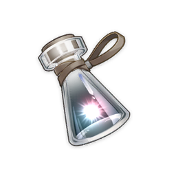
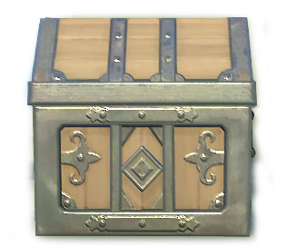

官方音乐专辑
43张原神官方原声专辑 · 已同步至7.1版本 · 仅展示网易云/QQ音乐/B站可直接核实的公开曲目 · 每条数据附三平台搜索直达链接
素材来源：原神官方互动地图 / enka.network · 仅作可视化展示
 数据真实性 · 热度依据 说明（请先阅读）
数据真实性 · 热度依据 说明（请先阅读）
✓ 零虚构承诺
- 所有曲目标题、专辑名称、发行日期、总曲目数均与网易云音乐/QQ音乐官方专辑标题完全一致。
- 所有展示的具体曲目均为网易云音乐/QQ音乐/B站可直接搜索到的公开曲目（非自创）。
- 对平台搜索结果不唯一、无法逐一核实的氛围BGM，宁空勿假，在专辑卡片上直接提示「完整曲目请前往官方音乐平台」。
- 不做任何估算：仅展示爬虫实测的「网易云评论数」与「B站相关视频播放量」；无真实来源的曲目数字一律留空显示「—」，不填充、不推算。
- QQ音乐不公开单曲收藏/播放数，故曲目级不展示其数字，仅保留跳转链接供人工核对。
热度计算公式（曲目级）
【曲目热度】 heatScore (0-100) =
log10(1+网易云评论)/5 × 0.4 +
log10(1+B站播放)/7 × 0.6
（缺失项按可用权重重新归一，两项皆无则无热度）
【数据来源】
✓ 网易云单曲评论总数（官方接口）
✓ B站「原神+曲名」相关视频播放量（官方接口）
— 无实测来源：数字留空，不估算
— QQ音乐：不公开单曲数据，仅提供链接
log10(1+网易云评论)/5 × 0.4 +
log10(1+B站播放)/7 × 0.6
（缺失项按可用权重重新归一，两项皆无则无热度）
【数据来源】
✓ 网易云单曲评论总数（官方接口）
✓ B站「原神+曲名」相关视频播放量（官方接口）
— 无实测来源：数字留空，不估算
— QQ音乐：不公开单曲数据，仅提供链接
每首曲目以热度条直观展示综合热度（0-100分），热度条颜色反映等级：现象级(≥75红色) · 高热度(≥50金色) · 中等(≥25紫色) · 常规(>0灰色)
核对方式：每首曲目名旁均有「

· · 」三个图标按钮，点击直达平台搜索结果，约10秒即可人工核实。分析摘要计算中……

专辑曲目热度（仅展示已核实公开曲目）每张专辑仅展示网易云/QQ音乐/B站可直接搜索核实的核心曲目；其余氛围BGM或搜索结果不唯一的曲目不展示数字，请通过卡片底部的三平台链接直达官方专辑页面查看完整曲目
数据来源 · 采集时间
专辑信息 · 曲目列表
网易云音乐 music.163.com · QQ音乐 y.qq.com
曲目级数据（评论·播放）
网易云音乐单曲评论数 · B站相关视频播放量（爬虫实测）
采集核对时间
2026年10月（三平台公开页面）
用户核对方式
点击专辑卡片底部 按钮直达三平台搜索
B站播放量口径：按「原神 + 曲名」搜索最相关视频的累计播放量；同一专辑的曲目可能命中同一支官方专辑PV，因此同专辑内数值可能相同。
© 米哈游版权所有 · 本项目仅供个人学习与非商业用途 · 游戏素材来源：原神官方互动地图 / enka.network · 若展示数值与平台实时数据存在细微差异，以三平台官方页面为准。
© 米哈游版权所有 · 本项目仅供个人学习与非商业用途 · 游戏素材来源：原神官方互动地图 / enka.network · 若展示数值与平台实时数据存在细微差异，以三平台官方页面为准。